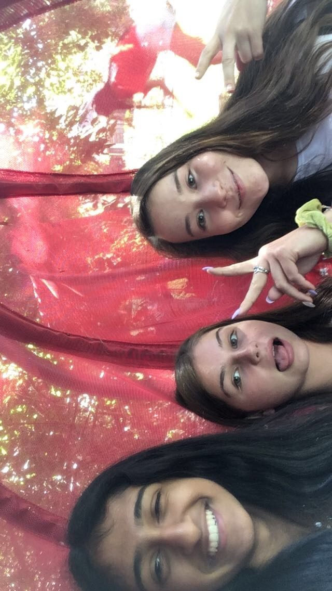

BusTracks App: In this potential app, users will enter their location. Then, a map with all the nearest buses as well how far away and where they are going will show up. It is basically local bus tracker.
Calculator: In this project, the user is able to enter whichever two numbers in the appropriate slot, and click addition, subtraction, or multiply. In the click of a second, the user will get his/her answer displayed.This is made using CodePen.
Beyonce Biography:
This link gives a little biography about the singer Beyonce as well as some pictures. This is made using CodePen.
Online Painter: In this project, user is able to fill the empty boxes with whichever color they want (provided) and create cool designs to their wish. This is used using Trinket.
Data Storage: This is a survey created for people to enter their favorite TV show.
Storybook: This is a knock-knock joke made in comic slots.This is made using Trinket.
HTML5: HTML is a coding language used to creaate websites.
CSS3: CSS is used to continue onto HTML. This means styling it, by adding different fonts or background colors, etc.
JavaScript: JavaScript is made to work with user interaction. For example, when clicking "Personal Projects" on this website, it shows more options. This is made through Java Script.
Backend: Backend is the main coding that makes a website appear properly with all the information to the users. It is the main foudation/base and usually requires a lot more work.
